アイスワインも満喫、ナイガラオンザレイクワイナリーツアー
このツアーに参加したのは3月のこと。引越ししていたためブログにアップするのが遅くなってしまった。
ワイナリー巡りの楽しいところは、ワインのテイスティングだけでなくショッピングも兼ねていること。気に入ったワインは当然買って持って帰ることができる。しかもＬＣＢＯでは売っていないワインや、セールで価格がぐっとさがっているワインが割安で買えたりもする。
今回参加したツアーはNiagara Fun Toursの冬季限定のナイアガラオンザレイクのワイナリー巡りで、試飲にアイスワインも含まれているのが魅力。共同購入サイトのbuytopiaをとおして、通常ひとり８９ドルのところ３７ドルというお得な値段で買えた。
集合はナイアガラエリアのため、まずはSafe Way Tourのカジノバスでナイアガラまで行く。ワインツアーは１１時ピックアップなので、念のためダウンタウンを７時４０分にでるバスに乗った。カジノカードを持っているのでひとり往復たったの５ドル。パスポートも忘れずに。
バスガイド兼運転手は若いお兄さんだった。ツアー客のぴちぴちした若い女の子の集団のうちのひとりは彼をひとめ見たとたん目が釘付けになっていた。人懐っこい性格で、Ｊ次郎によく話しかけていた。
最初に訪れたワイナリーはCaroline Cellars Winery。
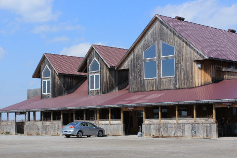
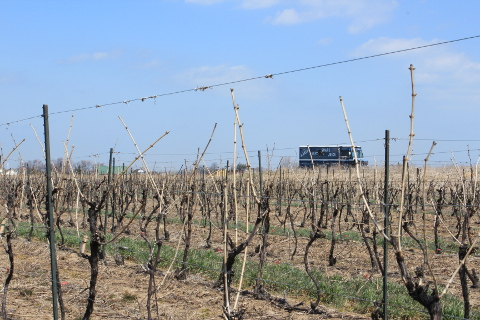
バスの中で試飲できるワインのリストを渡され、膨大なリストのなかからあらかじめ試飲したいものを４種類選ぶ。この日訪れたワイナリーのうちここだけは試したいワインを自分で選ぶことができる。私とＪ次郎のふたりで計８種類選ぶことができた。
３０種類もあるので手っ取り早く、単純に値段の高いものから選んでみることにした。
おいしかったのはなんといっても賞もとっているアイスワイン。香りもよくまるでシロップのように濃厚で凝縮されている味は別格。お値段もいい値段している。アイスワインってこんなにおいしいものなんだ、とＪ次郎も感激。普段なかなか口にする機会のない高級アイスワインを楽しめふたりとも大満足。
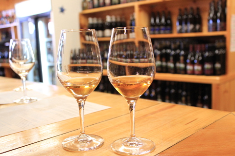
ここは試飲とはいえ結構な量を注いでくれるので1種類をふたりでシェアしても充分試飲が楽しめた。サービスもよくアイスワインを試飲するときにはそれまでのグラスから新しいグラスに変えてくれた。今日のツアーでこのワイナリーが一番気に入った。
次に寄ったのがHarvest Barn Country Marketという店。
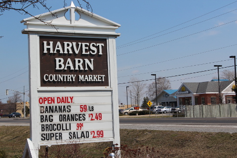
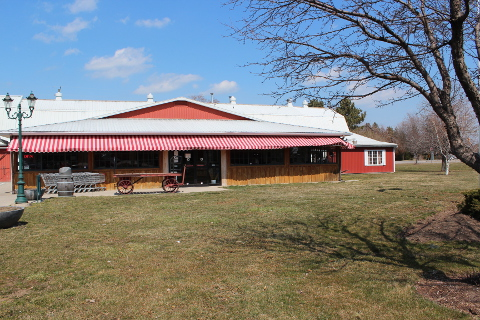
このツアーがいいのは昼食持参なところ。好みのチーズをたっぷり持参した。とはいえ、この店で調達できるようにもなっている。
はじめはファーマーズマーケットのようなところかと予想していたが、実際はデリが豊富な地元のスーパーといった感じでちょっとした昼食を買うには都合のよいところ。私達はチーズのほかにクラッカーのようなものも持参していたが、追加にチャパタブレッドをひとつ買った。
２軒目のワイナリーは、Vignoble Rancourt Winery。

テーブル席がアレンジしてあって持参してきた食べ物をここで食べられるようになっている。
ここではワインを３種類試飲できた。
アイスワインは試飲には含まれてなかったが、珍しい赤のアイスワインが追加で３ドルで試飲できた。せっかくだから試してみたけど、色つきのグラスに注がれたため、色もわからず。量も一口ぶんほどの量しかなかった。パイもついてきたのだが、スイーツはいらないからそのぶんもっとアイスワインを注いで欲しいところ。
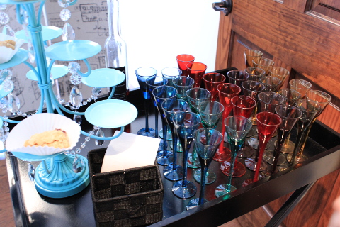
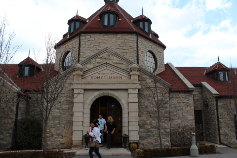
祖先がドイツ系移民だというワイナリー。
ここではアイスワインのかわりにレイトハーベストワインがだされた。レイトハーベストワインははじめて飲んだが、なかなかおいしい。
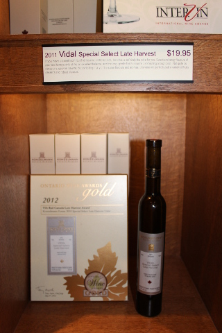
ここで試飲したリースリングがおいしくて値段も手ごろだったので購入。
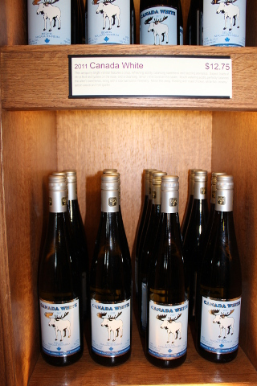
最後に訪れたワイナリーはPalatine Hills Estate Winery。
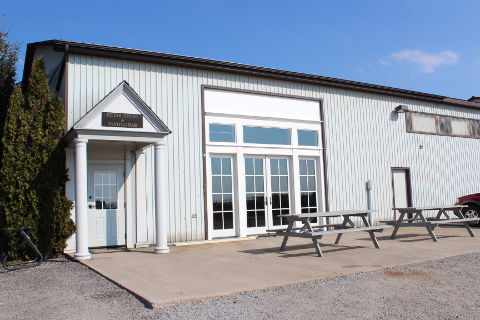
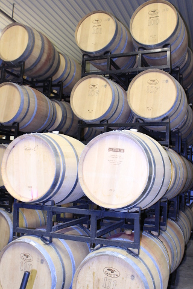
ここはサービス精神いっぱいで、終始楽しく和やかな雰囲気に満ちていた。ワインのグラスの持ち方や試飲の仕方などを教えてくれ、ゲームもあり。ゲームに参加したひとには後でワインがプレゼントされていた。
ワインのほうはリースリングがおいしかった。というか、もともとＪ次郎は赤ワインより白ワイン派だったのだが、今回の試飲ツアーにより、どうやらリースリングが好きなことが判明。
最後に試飲したアイスワインは味もよく、セールで１５ドルになっていたので、購入。
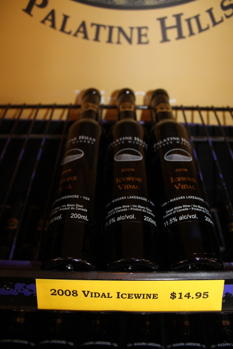
そしてこのツアーの締めくくりはChocolate FX。
最後にさらっとチョコレート工場見学。たくさんの種類のチョコレートが試食できるのでＪ次郎は忙しかった。Food Intolerance Testによりカカオ豆がアトピーの原因であることが判明した私はここでは暇で早々にバスに戻った。
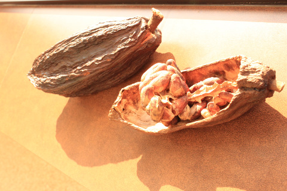
トロントに帰るにあたって、割り当てられた帰りのSafe Way Tourバスの時間には間に合わなかったので、乗りたい方面のバスのスタンドバイの列の最初に並ぶも、満員とのことでフィンチ駅行きのバスに乗せられる。しかし途中のシェパード駅で特別に降ろしてくれたのでそこから地下鉄に乗って家まで帰った。今回のツアーで買ったワイン、いつ飲もうか、もっと買ってもよかったね、などと話し合いながら。